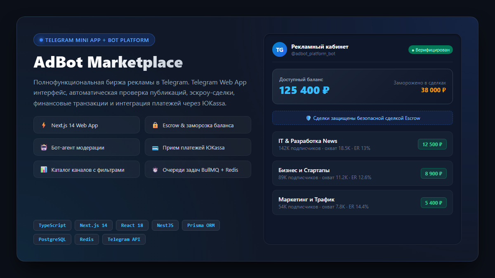
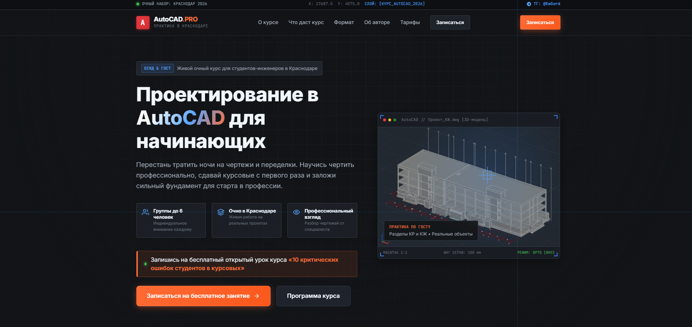
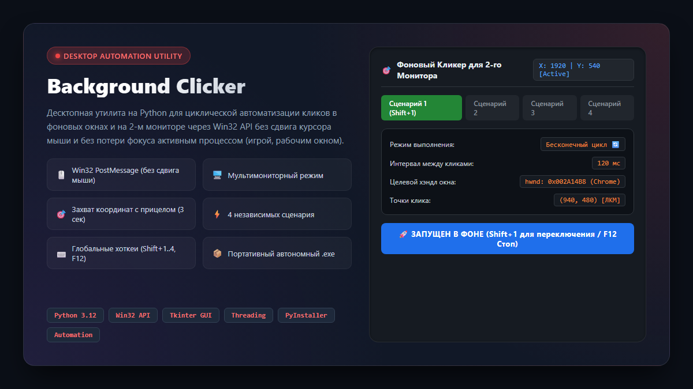
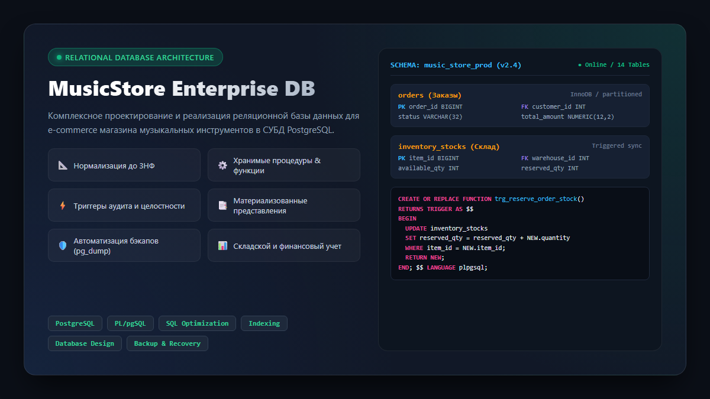
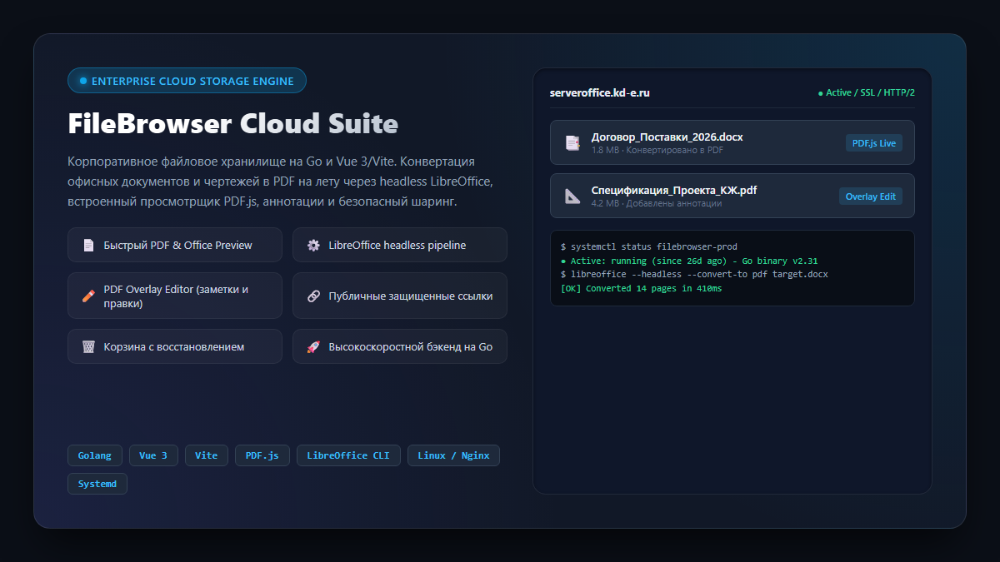
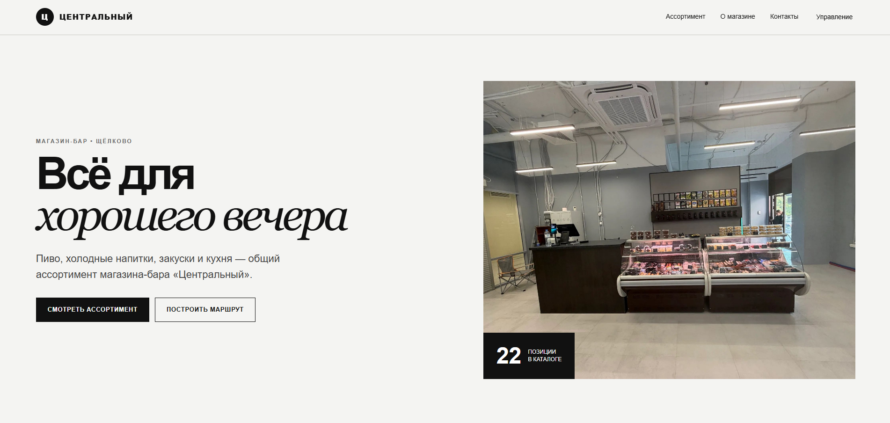
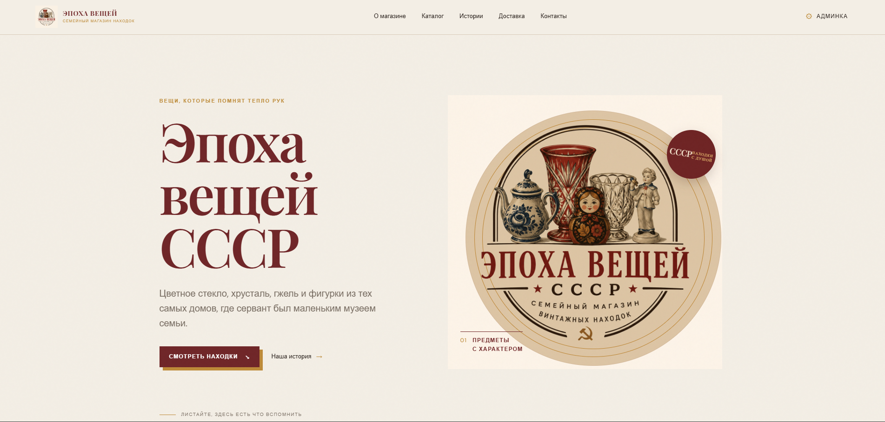
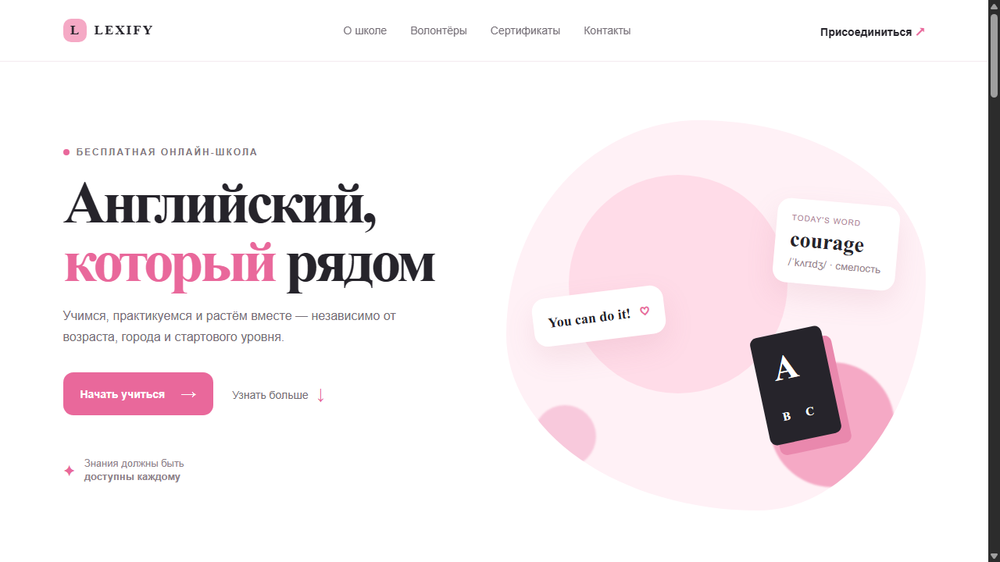

Разрабатываю цифровые продукты,
которые приносят результат.
Превращаю сложные бизнес-задачи в удобные решения: от реактивных Telegram Mini Apps и конверсионных лендингов до высоконагруженных баз данных и десктопного софта.
Избранные проекты и кейсы
Реальные коммерческие решения, сервисы и продукты для бизнеса

Telegram Mini AppAdBot Marketplace — Биржа рекламы в Telegram
Полнофункциональная экосистема для автоматизированной покупки и продажи рекламы в каналах: реактивный Web App (TMA), финансовый процессинг, безопасная сделка (Escrow) и фоновые очереди.

Commercial WebAutoCAD.PRO — Очный инженерный курс в Краснодаре
Высококонверсионный промо-сайт в строгой эстетике CAD-систем для набора студентов-инженеров. Акцентная сетка, 3D-модель строительных конструкций и плавная адаптивная верстка.

Desktop SoftwareBackground Clicker — Win32 Desktop Automation Tool
Десктопная программа с графическим интерфейсом для циклической автоматизации кликов на втором мониторе через низкоуровневые Win32 сообщения без перемещения курсора мыши и без потери фокуса активным окном.

Database ArchitectureMusicStore Enterprise DB — Реляционная база данных
Проектирование и реализация с нуля промышленной СУБД для интернет-магазина: 14 таблиц в 3-й нормальной форме, хранимые процедуры, автоматические триггеры складского учета, аудит и сценарии резервного копирования.

Cloud & DevOpsFileBrowser Cloud Suite — Облачное корпоративное хранилище
Кастомизация и развертывание enterprise-хранилища на Linux: фоновая headless-конвертация офисных документов и чертежей в PDF, встроенный просмотрщик, редактор аннотаций, корзина и защищенный шаринг.

E-Commerce WebМагазин-бар «Центральный» в Щёлково
Сайт магазина-бара крафтовых напитков и кухни с интерактивным каталогом товаров, демо-админкой для персонала, блоком контактов и кнопкой прокладки маршрута.

JAMstack Store«Эпоха вещей СССР» — Семейный магазин винтажа
Атмосферный интернет-магазин советского антиквариата с админкой Netlify CMS, позволяющей клиенту самостоятельно добавлять новые лоты, редактировать цены и вести блог историй.

Education LandingLexify — Онлайн-школа английского языка
Адаптивный промо-лендинг для волонтёрской школы английского языка. Мягкая дружелюбная айдентика, интерактивные карточки уровней, презентация преподавателей и форма записи.
Чем я могу помочь вашему бизнесу
Полный цикл разработки: от проектирования идеи до запуска и поддержки
Telegram Mini Apps & Боты
Разработка Web Apps внутри Telegram на React/Next.js: интернет-магазины, сервисы записи, каталоги, системы лояльности и платежи. Любые сценарии ботов на Python (aiogram) и Node.js.
- Интеграция с ЮKassa, крипто-эквайрингом, СБП
- Синхронизация с 1С, CRM и внешними API
- Личные кабинеты и веб-интерфейсы
Коммерческие сайты & Лендинги
Создание современных продающих сайтов, промо-страниц и каталогов. Чистая верстка, быстрая загрузка (<1 сек), идеальная адаптация под мобильные устройства и базовое SEO.
- Высокая конверсия и понятный UX
- Интеграция админ-панелей для легкого редактирования
- Подключение аналитики (Яндекс Метрика, GA4)
Автоматизация & Парсинг данных
Автоматизация рутинных задач сотрудника: фоновые кликеры, сбор баз данных, мониторинг цен конкурентов, рассылки и синхронизация таблиц.
- Парсинг сайтов и закрытых каталогов (Playwright/API)
- Десктопные утилиты на Python/Win32
- Оповещения в Telegram о важных событиях
Бэкенд, Базы данных & DevOps
Проектирование надежной серверной архитектуры: проектирование БД PostgreSQL/MySQL, написание REST API, настройка очередей (Redis/BullMQ) и развертывание на Linux-серверах.
- Оптимизация сложных SQL-запросов и триггеры
- Настройка Docker, Nginx, SSL сертификатов
- Автоматизация бэкапов и мониторинг
Стек и инструменты разработки
Использую проверенные современные технологии для надежности и скорости
Как строится работа
Простой и понятный процесс от первого контакта до релиза
Анализ & ТЗ
Обсуждаем вашу задачу, цели и бюджет. Помогаю составить чёткое ТЗ без лишнего оверинжиниринга.
Прототип & MVP
Быстро собираю рабочий прототип или структуру проекта, чтобы вы сразу увидели, как продукт будет работать.
Разработка & Тесты
Пишу чистый, масштабируемый код, настраиваю БД, подключаю платежи и тестирую на всех устройствах.
Запуск & Инструкции
Разворачиваю проект на сервере, настраиваю домен/SSL, передаю исходники и видео-инструкции по управлению.
Есть проект или идея?
Давайте сделаем красиво!
Напишите мне в Telegram — оперативно отвечу, отвечу на технические вопросы и рассчитаю ориентировочные сроки и стоимость.